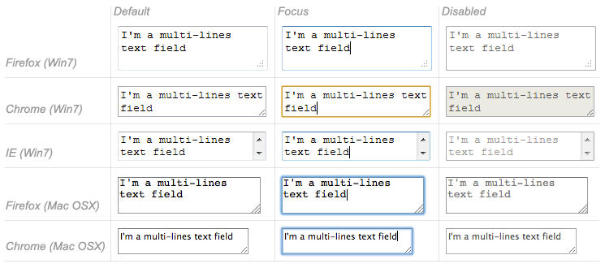
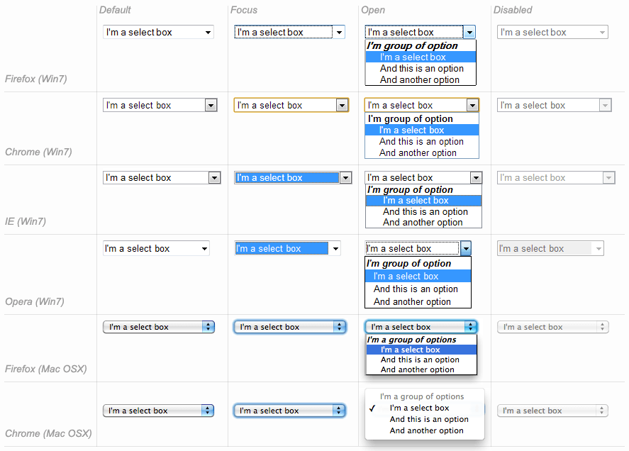
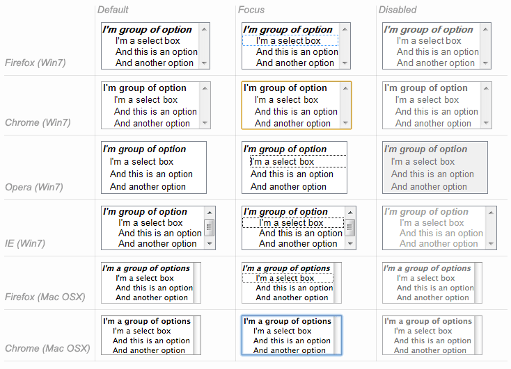
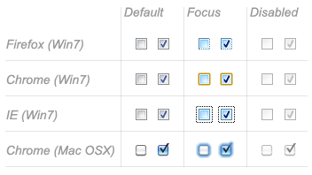
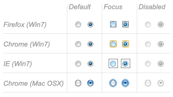

HTML forms are made of widgets. Those widgets are built-in controls supported by each browser. In this article we will dig into each of them, see how they work, and learn how well various browsers support them.
{kind=link}
We will focus on the built-in form widgets, but because HTML forms remain quite limited and the quality of the implementations can be very different from one browser to another, web developers sometimes build their own form widgets. This will be detailed in the article: How to build custom form widgets.
Text input fields
Text input fields are the most basic form widgets. They are a very convenient way to let the user enter any kind of data. However, some text fields can be specialized to achieve particular needs.
It's worth noting that HTML form text fields are simple plain text input controls. This means that you cannot use them to perform rich editing (bold, italic, etc.). All rich text editors out there are custom widgets.
All text fields share some common behaviors:
- They can be marked as
readonly(the user cannot modify the input value) or evendisabled(the input value is never sent with the rest of the form data). - They can have a
placeholder; this is text that appears inside the text input box that describes the purpose of the box briefly. - They can be constrained in
size(the physical size of the box) and length (the maximum number of characters that can be entered into the box). - They can benefit from spell checking, if the browser supports it.
| Feature Desktop | Chrome | Firefox (Gecko) | Internet Explorer | Opera | Safari |
|---|---|---|---|---|---|
<input>.readonly |
1.0 | 1.0 (1.7 or earlier) | 6 | 1.0 | 1.0 |
<input>.disabled |
1.0 | 1.0 (1.7 or earlier) | 6 | 1.0 | 1.0 |
<input>.placeholder |
10.0 | Unknown (4.0) | 10 | 11.10 | 4.0 |
<textarea>.placeholder |
10.0 | Unknown (4.0) | 10 | 11.50 | 5.0 |
<input>.size |
1.0 | 1.0 (1.7 or earlier) | 2 | 1.0 | 1.0 |
<input>.maxlength |
1.0 | 1.0 (1.7 or earlier) | 2 | 1.0 | 1.0 |
<input>.spellcheck |
10.0 | Unknown (3.6) | 10 | 11.0 | 4.0 |
| Feature Mobile | Android | Firefox Mobile (Gecko) | IE Mobile | Opera Mobile | Safari Mobile |
<input>.readonly |
(Yes) | 4.0 (4.0) | (Yes) | (Yes) | (Yes) |
<input>.disabled |
(Yes) | 4.0 (4.0) | (Yes) | (Yes) | (Yes) |
<input>.placeholder |
2.3 | 4.0 (4.0) | ? | 11.10 | 4 |
<textarea>.placeholder |
? | 4.0 (4.0) | ? | 11.50 | 4 |
<input>.size |
(Yes) | 4.0 (4.0) | (Yes) | (Yes) | (Yes) |
<input>.maxlength |
(Yes) | 4.0 (4.0) | (Yes) | (Yes) | (Yes) |
<input>.spellcheck |
? | 4.0 (4.0) | ? | 11.0 | ? |
Single line text fields
A single line text field is created using an <input> element whose type attribute value is set to text (also, if you don't provide the type attribute, text is the default value). The value text for this attribute is also the the fallback value if the value you specify for the type attribute is unknown by the browser.
<input type="text">
Single line text fields have only one true constraint: if you type text with line breaks, the browser removes those line breaks before sending the data.

That said, it's possible to add some "on demand" constraints to a single line text field. To do this, you use the pattern attribute; this tells the browser to check the validity of the value against a regular expression of your choice.
<input type="text" pattern="^cherry|banana$">
But HTML5 enhances the basic single line text field by adding special values for the type attribute. Those values still turn an <input> element into a single line text field but they add a few extra constraints and features to the field.
E-mail address field
This type of field is set with the value email for the type attribute:
<input type="email" multiple>
It adds this special validation constraint on the field: the user is required to type a valid e-mail address; any other content causes the field to be declared in error. It's also possible to let the user type several e-mail addresses by using the multiple attribute.
Password field
This type of field is set using the value password for the type attribute:
<input type="password">
It doesn't add any special constraints to the entered text, but it obscures the value of the field so it can't be read.
Search field
This type of field is set by using the value search for the type attribute:
<input type="search" autosave>
The main difference between a text field and a search field is one of look-and-feel (often, search fields are rendered with rounded corners). However, there is also one added feature to search fields: their values can be automatically saved to be auto completed across multiple pages on the same site.

Phone number field
This type of field is set using tel as the value of the type attribute:
<input type="tel">
Due to the wide variety of phone number formats around the world, this type of field does not enforce any constraints on the value entered by a user. This is primarily a semantic difference, although on some devices (especially on mobile), a different virtual keypad might be presented.
URL field
This type of field is set using the value url for the type attribute:
<input type="url">
It adds special validation constraints on the field, ensuring that only valid URLs are entered; if a value is entered that isn't a well-formed URL, the form is considered to be in an error state.
Fields that have special constraints and are in error prevent the form from being sent; in addition, they can be styled so as to make the error clear. We will discuss this in detail in the article: Data form validation.
| Feature Desktop | Chrome | Firefox (Gecko) | Internet Explorer | Opera | Safari |
|---|---|---|---|---|---|
<input>.type="text" |
1.0 | 1.0 (1.7 or earlier) | 2 | 1.0 | 1.0 |
<input>.type="email" |
10.0 | Unknown (4.0) | 10 | 10.62 | ? |
<input>.type="password" |
1.0 | 1.0 (1.7 or earlier) | 2 | 1.0 | 1.0 |
<input>.type="search" |
5.0 | Unknown (4.0) | 10 | 11.01 | 5.0 |
<input>.type="tel" |
5.0 | Unknown (4.0) | 10 | 11.01 | 5.0 |
<input>.type="url" |
10.0 | Unknown (4.0) | 10 | 10.62 | ? |
| Feature Mobile | Android | Firefox Mobile (Gecko) | IE Mobile | Opera Mobile | Safari Mobile |
<input>.type="text" |
(Yes) | 4.0 (4.0) | (Yes) | (Yes) | 1.0 |
<input>.type="email" |
Not supported | 4.0 (4.0) | Not supported | (Yes) | ? |
<input>.type="password" |
? | 4.0 (4.0) | ? | ? | ? |
<input>.type="search" |
Not supported | 4.0 (4.0) | ? | (Yes) | 4.0 |
<input>.type="tel" |
2.3 | 4.0 (4.0) | ? | (Yes) | 3.1 |
<input>.type="url" |
Not supported | 4.0 (4.0) | ? | (Yes) | 3.1 |
Multi-line text fields
A multi-line text field is specified using a <textarea> element, rather than using the <input> element.
<textarea cols="20" rows="10"></textarea>
The main difference between a textarea and a regular single line text field is that users are allowed to type text that includes hard line break (meaning it allows the characters carriage return [CR] and line feed [LF]).
It's also worth noting that, thanks to the CSS property resize, users can resize multi-line text boxes directly if you want to let them do so.

| Feature Desktop | Chrome | Firefox (Gecko) | Internet Explorer | Opera | Safari |
|---|---|---|---|---|---|
<textarea> |
(Yes) | 1.0 (1.7 or earlier) | (Yes) | (Yes) | (Yes) |
| Feature Mobile | Android | Firefox Mobile (Gecko) | IE Mobile | Opera Mobile | Safari Mobile |
<textarea> |
(Yes) | 4.0 (4.0) | (Yes) | (Yes) | (Yes) |
Drop-down content
Drop-down widgets are a simple way to let the user select one of many options. HTML has two forms of drop down content: the select box and autocomplete content. In both cases the interaction is the same. Once the control is activated, the browser displays a list of values the user can select among. This list of values is displayed on top of the page content.
Select box
A select box is created with a <select> element with one or more <option> elements as its children, each of which specifies one of its possible values.
<select> <option>Banana</option> <option>Cherry</option> <option>Lemon</option> </select>
If needed, the default value for the select box can be set using the selected attribute on the desired <option> element. The <option> elements can also be nested inside some <optgroup> elements to create visual groups of values:
<select> <optgroup label="fruits"> <option>Banana</option> <option selected>Cherry</option> <option>Lemon</option> </optgroup> <optgroup label="vegetables"> <option>Carrot</option> <option>Eggplant</option> <option>Potatoe</option> </optgroup> </select>

| Feature Desktop | Chrome | Firefox (Gecko) | Internet Explorer | Opera | Safari |
|---|---|---|---|---|---|
<select> |
1.0 | 1.0 (1.7 or earlier) | (Yes) | (Yes) | (Yes) |
<option> |
1.0 | 1.0 (1.7 or earlier) | (Yes) | (Yes) | (Yes) |
<optgroup> |
1.0 | 1.0 (1.7 or earlier) | (Yes) | (Yes) | (Yes) |
| Feature Mobile | Android | Firefox Mobile (Gecko) | IE Mobile | Opera Mobile | Safari Mobile |
<select> |
(Yes) | 4.0 (4.0) | (Yes) | (Yes) | (Yes) |
<option> |
(Yes) | 4.0 (4.0) | (Yes) | (Yes) | (Yes) |
<optgroup> |
(Yes) | 4.0 (4.0) | (Yes) | (Yes) | (Yes) |
Multi-choice select box
By default, a select box only lets the user select a single value. By adding the multiple attribut to the <select> element, the user becomes able to select several values. In that case, however, the select box no longer displays the values as dropdown content; instead, it's displayed as a regular list box.
<select multiple> <option>Banana</option> <option>Cherry</option> <option>Lemon</option> </select>

Auto-complete content
You can provide suggested, automatically-completed values for form widgets using the <datalist> element with some child <option> elements to specify the values to display. Once set, the data list is bound to another widget using the list attribute.
Once a data list is affiliated with a form widget, its options are used to auto-complete text entered by the user; typically, this is done by presenting a drop-down box listing possible matches.
<label for="myFruit">What's your favorite fruit?</label> <input type="text" id="myFruit" list="mySuggestion" /> <datalist id="mySuggestion"> <option>Apple</option> <option>Banana</option> <option>Blackberry</option> <option>Blueberry</option> <option>Lemon</option> <option>Lychee</option> <option>Peach</option> <option>Pear</option> </datalist>
list attribute and the <datalist> element can be used with any kind of widget requiring a user input. However, it is unclear how it should work with controls other than text (color or date for example), and different browsers behave differently from case to case. Because of that, be cautious using this feature with anything but text fields
| Feature Desktop | Chrome | Firefox (Gecko) | Internet Explorer | Opera | Safari |
|---|---|---|---|---|---|
<datalist> |
20.0 | Unknown (4.0) | 10 | 9.6 | Not supported |
<input>.list |
20.0 | Unknown (4.0) | 10 | 9.6 | Not supported |
| Feature Mobile | Android | Firefox Mobile (Gecko) | IE Mobile | Opera Mobile | Safari Mobile |
<datalist> |
Not supported | 4.0 (4.0) | Not supported | (Yes) | Not supported |
<input>.list |
Not supported | 4.0 (4.0) | Not supported | (Yes) | Not supported |
Checkable items
Checkable items are widgets whose state you can change by clicking on them. There are two kinds of checkable item: the check box and the radio button. Both use the checked attribute to indicate whether the widget is checked by default or not.
It's worth noting that these widgets do not behave exactly like other form widgets. For most form widgets, once the form is sent, all widgets that have a name attribute are sent, even if there is no value. In the case of checkable items, their values are sent only if they are checked. If they are not checked, nothing is sent, not even their name.
Check box
A check box is created by using the <input> element with its type attribute set to the value checkbox.
<input type="checkbox" checked>
The checkbox created by the preceding HTML is checked by default.

| Feature Desktop | Chrome | Firefox (Gecko) | Internet Explorer | Opera | Safari |
|---|---|---|---|---|---|
<input>.type="checkbox" |
1.0 | 1.0 (1.7 or earlier) | 2 | 1.0 | 1.0 |
| Feature Mobile | Android | Firefox Mobile (Gecko) | IE Mobile | Opera Mobile | Safari Mobile |
<input>.type="checkbox" |
1.0 | 1.0 (1.0) | (Yes) | (Yes) | (Yes) |
Radio button
A radio button is created by using the <input> element with its type attribute set to the value radio.
<input type="radio" checked>
Several radio buttons can be tied together. If they share the same value for their name attribute, they will be considered to be in the same group of buttons. Only one button in a given group may be checked at the same time; this means that when one of them is checked all the others automatically get unchecked. When the form is sent, only the value of the checked radio button is sent. If none of them are checked, the whole pool of radio buttons is considered to be in an unknown state and no value is sent with the form.
<fieldset> <legend>What gender are you?</legend> <p><label for="g1"><input type="radio" name="g" id="g1" value="M"> Male</label></p> <p><label for="g2"><input type="radio" name="g" id="g2" value="F"> Female</label></p> <p><label for="g3"><input type="radio" name="g" id="g3" value="B"> Both</label></p> <p><label for="g4"><input type="radio" name="g" id="g4" value="N"> None</label></p> <p><label for="g5"><input type="radio" name="g" id="g5" value="!"> This is not your concern!</label></p> <p><label for="g6"><input type="radio" name="g" id="g6" value="?"> Who cares?</label></p> <p><label for="g7"><input type="radio" name="g" id="g7" value="\o/"> Obi-Wan Kenobi</label></p> </fieldset>

| Feature Desktop | Chrome | Firefox (Gecko) | Internet Explorer | Opera | Safari |
|---|---|---|---|---|---|
<input>.type="radio" |
1.0 | 1.0 (1.7 or earlier) | 2 | 1.0 | 1.0 |
| Feature Mobile | Android | Firefox Mobile (Gecko) | IE Mobile | Opera Mobile | Safari Mobile |
<input>.type="radio" |
1.0 | 1.0 (1.0) | (Yes) | (Yes) | (Yes) |
Buttons
Within HTML forms, there are three kinds of button:
- Submit
- Sends the form data to the server.
- Reset
- Resets all form widgets to their default values.
- Anonymous
- Buttons that have no automatic effect but can be customized using JavaScript code.
A button is created using a <button> element or an <input> element. It's the value of the type attribute that specifies what kind of button is displayed:
submit
<button type="submit">
This a <br><strong>submit button</strong>
</button>
<input type="submit" value="This is a submit button">
reset
<button type="reset">
This a <br><strong>reset button</strong>
</button>
<input type="reset" value="This is a reset button">
anonymous
<button type="button">
This an <br><strong>anonymous button</strong>
</button>
<input type="button" value="This is an anonymous button">
The buttons always behave the same whether you use a <button> element or an <input> element. There are, however, some minor differences:
- As you can see in the previous examples,
<button>elements let you use HTML content as their label, while<input>elements only accept plain text content. - With
<button>elements, it's possible to have a value different than the button's label (this isn't reliable in versions of Internet Explorer prior to IE 8, however).

| Feature Desktop | Chrome | Firefox (Gecko) | Internet Explorer | Opera | Safari |
|---|---|---|---|---|---|
<input>.type="submit" |
1.0 | 1.0 (1.7 or earlier) | 2 | 1.0 | 1.0 |
<input>.type="reset" |
1.0 | 1.0 (1.7 or earlier) | 2 | 1.0 | 1.0 |
<input>.type="button" |
1.0 | 1.0 (1.7 or earlier) | 3 | 1.0 | 1.0 |
<button> |
1.0 | 1.0 (1.7 or earlier) | (Yes) (Buggy before IE8) |
(Yes) | (Yes) |
| Feature Mobile | Android | Firefox Mobile (Gecko) | IE Mobile | Opera Mobile | Safari Mobile |
<input>.type="number" |
1.0 | 1.0 (1.0) | (Yes) | (Yes) | (Yes) |
<input>.type="reset" |
1.0 | 1.0 (1.0) | (Yes) | (Yes) | (Yes) |
<input>.type="button" |
1.0 | 1.0 (1.0) | (Yes) | (Yes) | (Yes) |
<button> |
1.0 | 1.0 (1.0) | (Yes) | (Yes) | (Yes) |
Advanced form widgets
Those widgets are form controls that let user input some complex or highly structured data. This includes exact or approximate numbers, date and time, or colors.
Numbers
Widgets for numbers are created with the <input> element with its type attribute set to the value number. This control looks like a text field but allows only floating-point numbers, and usually provides some buttons to increase or decrease the value of the widget.
It's also possible to constrain the value by setting the min and max attributes. You can also specify the amount by which the increase and decrease buttons change the widget's value by setting the step attribute.
Example
<input type="number" min="1" max="10" step="2">
This creates a number widget whose value is restricted to be between 1 and 10 whose increase and decrease buttons change its value by 2.
| Feature Desktop | Chrome | Firefox (Gecko) | Internet Explorer | Opera | Safari |
|---|---|---|---|---|---|
<input>.type="number" |
11.0 | Not supported bug 344616 | 10 (recognized but no UI) |
(Yes) | 5.2 |
| Feature Mobile | Android | Firefox Mobile (Gecko) | IE Mobile | Opera Mobile | Safari Mobile |
<input>.type="number" |
2.3 | Not supported | Not supported | (Yes) | 4.0 |
Sliders
Another way to pick a number is to use a slider. Because, visually speaking, these are less accurate than text fields, sliders are used to pick a number whose exact value is not necessarily important.
A slider is created by using the <input> with its type attribute set to the value range. It's important to properly configure it your slider; to that end, it's highly recommended that you set the min, max, and step attributes.
Example
<input type="range" min="1" max="5" step="1">
This example creates a slider whose value may range between 1 and 5, and whose increment/decrement buttons change the value by +1 and -1.
| Feature Desktop | Chrome | Firefox (Gecko) | Internet Explorer | Opera | Safari |
|---|---|---|---|---|---|
<input>.type="range" |
5.0 | 23.0 | 10 | 10.62 | 4.0 |
| Feature Mobile | Android | Firefox Mobile (Gecko) | IE Mobile | Opera Mobile | Safari Mobile |
<input>.type="range" |
Not supported | 23.0 | Not supported | 10.62 | 5.0 |
Date and time picker
Gathering date and time values has traditionally been a nightmare for web developers. HTML5 brings some enhancements here by providing a special control to handle this specific kind of data.
A date and time control is created using the <input> element and the proper value for the type attribute. Because you may wish to collect a date, a time, or both, there are several different available values for the type attribute:
date
This creates a widget to display and pick a date but without any time.
<input type="date">
datetime
This creates a widget to display and pick a date with time in the UTC time zone.
<input type="datetime">
datetime-local
This creates a widget to display and pick a date with time in any specific time zone.
<input type="datetime-local">
month
This creates a widget to display and pick a month with a year.
<input type="month">
time
This creates a widget to display and pick a time value.
<input type="time">
week
This creates a widget to display and pick a week number and its year.
<input type="week">
All date and time control can be constrained using the min and max attributes.
<label for="myDate">When are you available this summer?</label> <input type="date" min="2013-06-01" max="2013-08-31" id="myDate">
| Feature Desktop | Chrome | Firefox (Gecko) | Internet Explorer | Opera | Safari |
|---|---|---|---|---|---|
<input>.type="date" |
20.0 | Not supported bug 825294 | Not supported | 10.62 | (Yes) |
<input>.type="datetime" |
Not supported | Not supported bug 825294 | Not supported | 10.62 | (Yes) |
<input>.type="datetime-local" |
Not supported | Not supported bug 825294 | Not supported | 10.62 | (Yes) |
<input>.type="month" |
Not supported | Not supported bug 825294 | Not supported | 10.62 | (Yes) |
<input>.type="time" |
Not supported | Not supported bug 825294 | Not supported | 10.62 | (Yes) |
<input>.type="week" |
Not supported | Not supported bug 825294 | Not supported | 10.62 | (Yes) |
| Feature Mobile | Android | Firefox Mobile (Gecko) | IE Mobile | Opera Mobile | Safari Mobile |
<input>.type="date" |
Not supported | Not supported bug 446510 | Not supported | 10.62 | 5.0 |
<input>.type="datetime" |
Not supported | Not supported bug 446510 | Not supported | 10.62 | (Yes) |
<input>.type="datetime-local" |
Not supported | Not supported bug 446510 | Not supported | 10.62 | (Yes) |
<input>.type="month" |
Not supported | Not supported bug 446510 | Not supported | 10.62 | (Yes) |
<input>.type="time" |
Not supported | Not supported bug 446510 | Not supported | 10.62 | (Yes) |
<input>.type="week" |
Not supported | Not supported bug 446510 | Not supported | 10.62 | (Yes) |
Color picker
Colors are always a bit difficult to handle. There are many ways to express them: RGB values (decimal or hexadecimal), HSL values, keywords, etc. The color widget lets users pick a color in both textual and visual ways.
A color widget is created using the <input> element with its type attribute set to the value color.
<input type="color">
| Feature Desktop | Chrome | Firefox (Gecko) | Internet Explorer | Opera | Safari |
|---|---|---|---|---|---|
<input>.type="color" |
21.0 | Not supported bug 547004 | Not supported | 11.01 | Not supported |
| Feature Mobile | Android | Firefox Mobile (Gecko) | IE Mobile | Opera Mobile | Safari Mobile |
<input>.type="color" |
Not supported | Not supported | Not supported | ? | Not supported |
Other widgets
There are a few other widgets that cannot be easily classified due to their very specific behaviors, but which are still very useful.
File picker
HTML forms are able to send files to a server; this specific action is detailed in the article: Sending and retrieving form data. The file picker widget is how the user can choose one or more files to send.
To create a file picker widget, you use the <input> element with its type attribute set to file. The types of files that are accepted can be constrained using the accept attribute. In addition, if you want to let the user pick more than one file, you can do so by adding the multiple attribute.
Example
In this example, a file picker is created requesting graphic image files. The user is allowed to select multiple files.
<input type="file" accept="image/*" multiple>
| Feature Desktop | Chrome | Firefox (Gecko) | Internet Explorer | Opera | Safari |
|---|---|---|---|---|---|
<input>.type="file" |
1.0 | 1.0 (1.7 or earlier) | 3.02 | 1.0 | 1.0 |
| Feature Mobile | Android | Firefox Mobile (Gecko) | IE Mobile | Opera Mobile | Safari Mobile |
<input>.type="file" |
? | ? | ? | ? | ? |
Hidden content
It's sometimes convenient for technical reasons to have pieces of data that are sent with a form but not displayed to the user. To do this, you can add an invisible element in your form. To do this, use an <input> with its type attribute set to the value hidden.
If you create such an element, it's required to set its name and value attributes:
<input type="hidden" name="timestamp" value="1286705410">
| Feature Desktop | Chrome | Firefox (Gecko) | Internet Explorer | Opera | Safari |
|---|---|---|---|---|---|
<input>.type="hidden" |
1.0 | 1.0 (1.7 or earlier) | 2 | 1.0 | 1.0 |
| Feature Mobile | Android | Firefox Mobile (Gecko) | IE Mobile | Opera Mobile | Safari Mobile |
<input>.type="hidden" |
(Yes) | (Yes) | (Yes) | (Yes) | (Yes) |
Image button
The image button control is one which is displayed exactly like an <img> element, except that when the user clicks on it, it behaves like a submit button (see above).
An image button is created using an <input> element with its type attribute set to the value image. This element supports exactly the same set of attributes as the <img> element, plus all the attributes supported by any form buttons.
<input type="image" alt="Click me!" src="my-img.png" width="80" height="30" />
If the image button is used to submit the form, this widget doesn't submit its value but instead the X and Y coordinates of the click on the image (the coordinates are relative to the image, meaning that the upper-left corner of the image represents the coordinate 0, 0). The coordinates are sent as two key/value pairs. The X value key is the value of the name attribute followed by the string ".x" and the Y value key is the value of the name attribute followed by the string ".y". This is a very convenient way to build a "hot map".
Let's see an example:
<form action="http://foo.com" method="get"> <input type="image" value="pos" alt="" src="map.png" /> </form>
When you click on the image of this form, you are sent to the following URL:
http://foo.com?pos.x=123&pos.y=456
The value of the pos.x and pos.y parameters depends on where you click on the image. How those value are sent and retrieve is detailed on the Sending and retrieving form data article.
| Feature Desktop | Chrome | Firefox (Gecko) | Internet Explorer | Opera | Safari |
|---|---|---|---|---|---|
<input>.type="image" |
1.0 | 1.0 | 2 | 1.0 | 1.0 |
| Feature Mobile | Android | Firefox Mobile (Gecko) | IE Mobile | Opera Mobile | Safari Mobile |
<input>.type="image" |
(Yes) | (Yes) | (Yes) | (Yes) | (Yes) |
Meters and progress bars
Meters and progress bars are visual representations of numeric values.
A progress bar represents a value that changes over time up to a maximum value specified by the max attribute. Such a bar is created using a <progress> element. The content inside the <progress> element is a fallback for browsers that don't support the element and for assistive technologies to vocalize it.
<progress max="100" value="75">75/100</progress>
A meter bar represents a fixed value in a range delimited by a min and a max value. This value is visualy renderd as a bar, and to know how this bar looks, we compare the value to some others values:
- the
lowandhighvalues divide the range in three parts: - The
optimumvalue define the optimum value for the<meter>element. In conjuction with thelowandhighvalue, it defines which part of the range is prefered:- If the
optimumvalue is in the lower part of the range, the lower range is considered to be the prefered part, the medium range is considered to be the average part and the higher range is considered to be the worst part. - If the
optimumvalue is in the medium part of the range, the lower range is considered to be the average part, the medium range is considered to be the prefered part and the higher range is considered to be the average part as well. - If the
optimumvalue is in the higher part of the range, the lower range is considered to be the worst part, the medium range is considered to be the average part and the higher range is considered to be the prefered part.
- If the
All browsers that implement the <meter> element use those values to change the color of the meter bar:
- If the current value is in the prefered part of the range, the bar is green.
- If the current value is in the average part of the range, the bar is yellow.
- If the current value is in the worst part of the range, the bar is red.
Such a bar is created using a <meter> element. The content inside the <meter> element is a fallback for browsers that don't support the element and for assistive technologies to vocalize it.
<meter min="0" max="100" value="75" low="33" high="66" optimum="50">75</meter>
| Feature Desktop | Chrome | Firefox (Gecko) | Internet Explorer | Opera | Safari |
|---|---|---|---|---|---|
<progress> |
6.0 | 6.0 (6.0) | 10 | 10.6 | 5.2 |
<meter> |
6.0 | 16.0 (16.0) | Not supported | 11.0 | 5.2 |
| Feature Mobile | Android | Firefox Mobile (Gecko) | IE Mobile | Opera Mobile | Safari Mobile |
<progress> |
Not supported | 6.0 (6.0) | Not supported | 11.0 | ? |
<meter> |
Not supported | 16.0 (16.0) | Not supported | 11.0 | ? |
See also
To dig into the different form widgets, there are some useful external resources you should check out:
- The Current State of HTML5 Forms by Wufoo
- HTML5 Tests - inputs on Quirksmode (also available for mobile browsers)